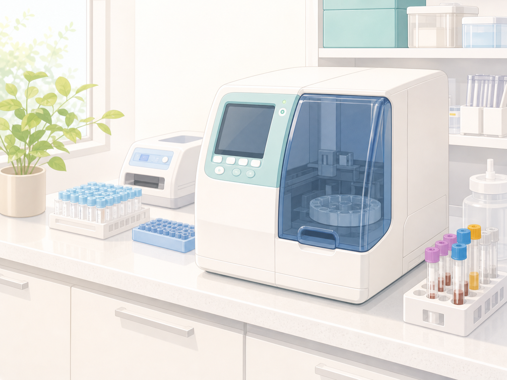
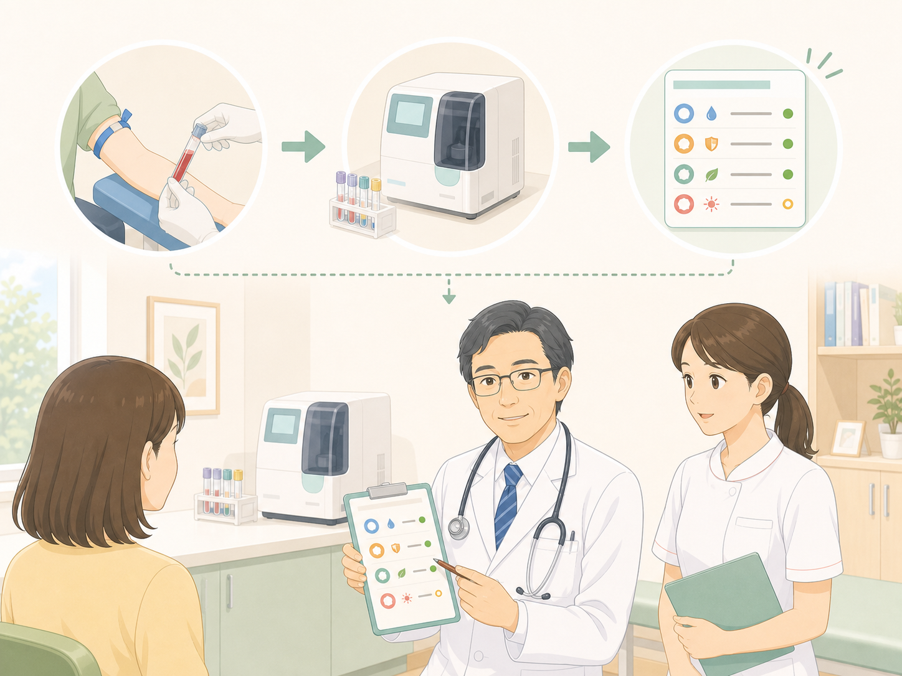
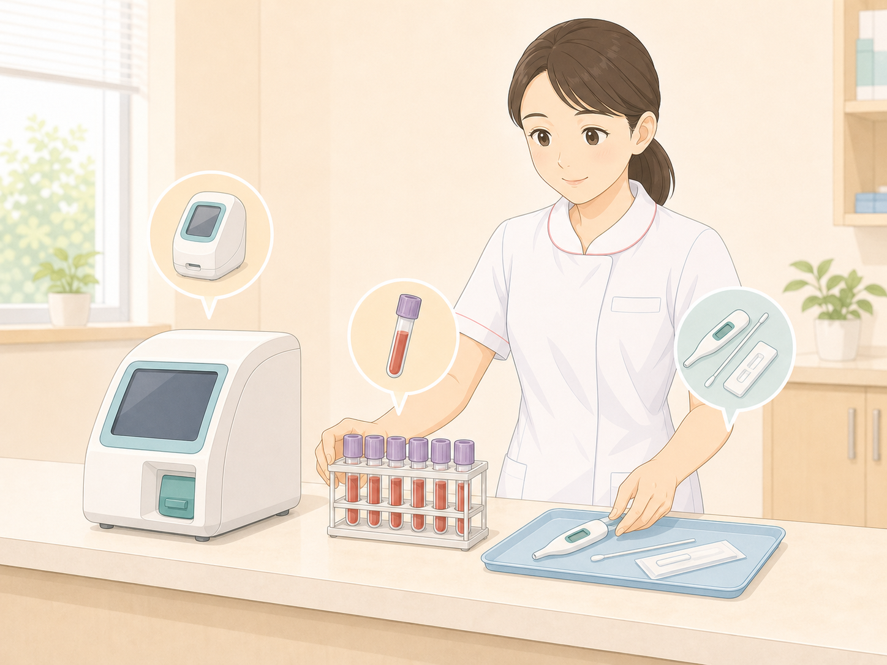

仕事などで忙しい方も、来院当日に検査結果を確認できる場合があります。
発熱・炎症・貧血などが心配な方へ
院内緊急検査
来院当日に確認できる検査を備え、重症な病気の早期発見と基幹病院への紹介につなげます。

検査で確認すること
当日検査を診察につなげます。

炎症や貧血を確認
血液検査で炎症や貧血の状態を確認し、必要な対応を判断します。

糖尿病や感染症の検査
HbA1cやインフルエンザなど、症状に応じて必要な検査を行います。
全自動血球計数器
炎症を引き起こす病気があると白血球が増加、出血などで貧血が高度の場合はヘモグロビンや赤血球が減少します。
測定時間は90秒です。
生化学自動分析装置
肝機能異常や腎機能異常、急性膵炎の診断を行うことができます。炎症を引き起こす病気があると上昇するCRPの測定も可能です。
測定時間は約10分です。
糖尿病検査機器
糖尿病の状態を調べるために有用なHbA1c（ヘモグロビン・エイ・ワン・シー）を6分30秒で調べることができます。
超高感度インフルエンザ検査機器
簡易インフルエンザ検査キットでは発熱後12時間以内ではウィルス量が少なくインフルエンザの診断が難しいですが、当院の超高感度インフルエンザ検査機器を使用すると発熱後早期のインフルエンザ診断が容易になります。